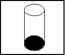
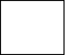
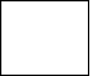
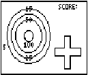

| HOME >> Tutorials >> Tutorial 19: Pictures |
Introduction:
We've finally gotten to creating pictures. Now we can compile all our commands that we've learnt in the past seven tutorials to make some really good pictures. Pictures contain points & pixels, lines, circles, shading, text, and even functions. A picture can also include axes and tick marks. The picture does not include axes labels, lower and upper bound indicators, prompts, or cursor coordinates.
New Commands:
| StorePic | Stores current picture in designated picture variable |
| RecallPic | Displays the chosen picture on the graph screen |
| StorePic n | RecallPic n |
New Variables:
| Picture Variables | The variables in which pictures are stored into |
The Codes:
There will two codes in this tutorial and links to two other codes for pictures. The first code is simply just making a cylinder (a coke can), using lines and circles. The second code is code for a picture that I actually use in one of my games. It is a dartboard for my game called DARTZ 2000 with Link Play v1.5. In that code, however, I will not give comments on every line like I usually do because there's really nothing to explain. It is just lines, circles, and some text. Here's the coke can:
| : | For AShell, SOS, and TI-Explorer |
| AxesOff | Turns the graph axes off |
| FnOff | Deselects all the Y= functions |
| -10 |
Stores Xmin as -10 |
| 10 |
Stores Xmax as 10 |
| 10 |
Stores Ymax as 10 |
| -10 |
Stores Ymin as -10 |
| ClrDraw | Clears the graph screen of all drawings |
| Circle(0,6,3 | Draws a circle at (0,6) and radius of 3 |
| Circle(0,-6,3 | Draws a circle at (0,-6) and radius of 3 |
| Line(3,6,3,-6 | Draws a vertical line segment |
| Line(-3,6,-3,-6 | Draws a vertical line segment |
| Shade(- |
Shades in the bottom circle completely |
| StorePic 7 | Stores the picture on the graph screen into Pic7 |
| Pause | Suspends program and waits for user to press |
| ClrDraw | Clears the graph screen of all drawings |
| Pause | Suspends program and waits for user to press |
| RecallPic 7 | Displays the picture in Pic7 on the graph screen |
 press   press
 press 
The first thing that I want you to notice is how the picture come up much faster the second time, then when we were actually first drawing the picture. This is the biggest advantage of using pictures: a whole lot of drawings can be displayed all at once. In the time that it took that first circle to be completely finished, the program could have recalled about four or five different pictures. Maybe even more. If you had to display four circles (like in my dartboard picture) every time in your game, it will not only drastically slow down the game, but also waste memory and make the game really boring. When people are playing games, they want the least amount of loading time possible. You may be wondering why I set the window variables back to normal when we are using circles in lines. The reason is that I wanted to make ellipses and not circles, actually. Notice how I used the command Circle(, but it didn't come out as a perfect circle. That happens when you set the window variables to certain values; the circles are compressed. Next is the code that I use to make my dartboard for my DARTZ 2000 game.
:
ClrDraw
AxesOff
FnOff
0
 Xmin
94
Xmin
94 Xmax
-62
Xmax
-62 Ymin
0
Ymin
0 Ymax
Text(37,1,"5
Text(2,27,"15
Text(47,27,"25
Text(12,27,"50
Text(35,25,"100
Circle(30,-30,25
Circle(30,-30,20
Circle(30,-30,15
Circle(30,-30,5
Line(60,-41,60,-48
Line(90,-41,90,-48
Line(71,-30,78,-30
Line(71,-60,78,-60
Line(60,-41,71,-41
Line(60,-48,71,-48
Line(71,-30,71,-41
Line(78,-30,78,-41
Line(90,-41,78,-41
Line(90,-48,78,-48
Line(78,-60,78,-48
Line(71,-60,71,-48
Text(0,65,"SCORE:
StorePic 4
Ymax
Text(37,1,"5
Text(2,27,"15
Text(47,27,"25
Text(12,27,"50
Text(35,25,"100
Circle(30,-30,25
Circle(30,-30,20
Circle(30,-30,15
Circle(30,-30,5
Line(60,-41,60,-48
Line(90,-41,90,-48
Line(71,-30,78,-30
Line(71,-60,78,-60
Line(60,-41,71,-41
Line(60,-48,71,-48
Line(71,-30,71,-41
Line(78,-30,78,-41
Line(90,-41,78,-41
Line(90,-48,78,-48
Line(78,-60,78,-48
Line(71,-60,71,-48
Text(0,65,"SCORE:
StorePic 4

As you can see, on the left side are four circles with their point values next to them. In the upper right it says "SCORE:", and below that is where the scores will be displayed. At the bottom right is the meter. A circle moves left to right and then up and down in the meter and where it stops in the meter is where the "dart" will be placed on the dartboard. You can download DARTZ 2000 with Link Play v1.5 by visiting the DARTZ 2000 program profile page.
Now if you want more examples of pictures, I have three more examples. The first example is a bowling lane for my game, Supreme Bowling with Link Play v4.6. This picture has lines, shading, and text. The second code I made is extremely long. I put it on my calculator using the TI-Graph Link. If you have the TI-Graph Link Software, you'll want to check this code out because it actually makes a picture. It's a picture of a turkey that I also use in my Supreme Bowling game. If the person makes three strikes in a row, the picture of the turkey flashes three times on the screen. The third code is just as long as the second code with the turkey. It is a picture of a really complicated maze that I created for my game, The Ultimate Maze 2000 v1.0.
Conclusion:
I hope you really enjoyed this tutorial because I enjoyed making it. I only see one problem with the picture variables. If you have a game that uses Pic9, let's say, someone else's program can overwrite that picture. However, the only way that it can get overwritten is if the user lets it be. In the next tutorial, I'll teach you how to do some simple animation that you can use in your opening screens of your games. There are only four tutorials left.
If you do not understand a particular part in this lesson, have suggestions, or find any problems please contact me.
 |
 |
| Tutorial 18 | Tutorial 20 |